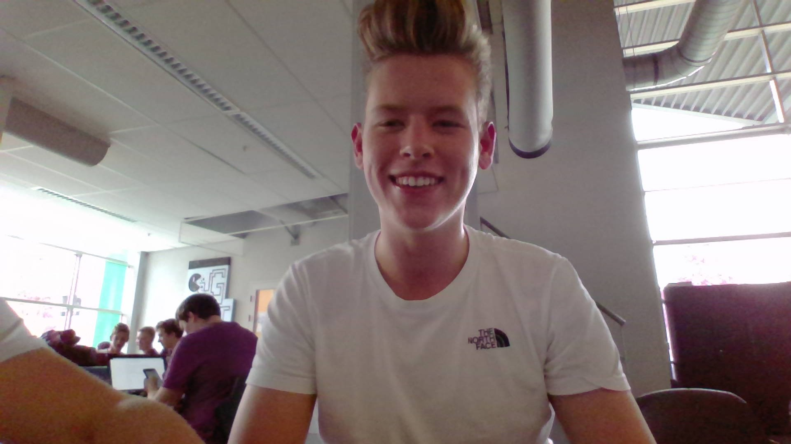

Hallo! ik ben Nick. Op deze pagina ga ik vertellen over wie ik ben, waar ik vandaan kom, en zoveel meer.
Zoals ik al zei, ik ben Nick Taal. Een 17 jarige jongen die geboren en getogen is in dordrecht. Ik heb voor deze opleiding gekozen omdat, ik graag met computers werkt en het leuk vind om te coderen. Mijn motivatie om door te blijven gaan is door steeds meer te leren, daardoor zie je steeds meer resultaat. Ik heb in mijn vrije tijd aardig wat tijd besteed aan het leren van HTML omdat ik een klein beetje achterloop, ik besteed daar gemiddeld een uur aan per dag. Mijn ontwikkelpunt van de afgelopen dagen is dat ik vooral heb geleerd om fouten op te lossen, Foutjes te begrijpen en waar het probleem zit. Ik Werk graag. ik werk zelf bij de lidl en dat is ook een grote opvulling van mijn vrije tijd. vootderest zit ik meestal buiten te chillen of netflixen/gamen Ik ben zelf niet zo heel bekend met HTML, maar vind het wel heel leuk om mee te werken. Daarom zou ik er graag meer over willen leren. De studie die ik heb gedaan voordat ik hier terecht kwam was de MAVO. Die studie heb ik gevolgd op Mavo Stek. De enige werkervaring die ik heb is bij supermarkten. Ik heb een jaar bij de jumbo gewerkt en op het moment werk ik bij de lidl. Vroeger heb ik ook een krantenwijk gehad maar ik ben blij dat die dagen over zijn. 